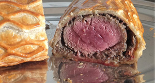

Solomillo Ibérico Wellington, confitura de cebollas, salsa cremosa de champiñones
"Un clásico de siempre con un resultado espectacular. Sorprenderás a tus invitados."

| Solomillo Ibérico (500 gr.) | 2 un. |
| Jamón serrano | 100 gr. |
| Mostaza | 60 gr. |
| Aceite de oliva | 100 ml. |
 |
|
| Hojaldre | 250 gr. |
| Huevo batido | 1 un. |
|
|
| Champiñones | 400 gr. |
| Cebollas | 75 gr. |
| Chalotas | 2 un. |
| Mantequilla | 25 gr. |
| Aceite de oliva | 25 ml. |
| Nata líquida | 100 ml. |
| Coñac | 2 cs. |
| Sal, Pimienta, Moscada | 1 cc. |
|
|
| Cebolla de Figueres | 400 gr. |
| Azúcar | 100 gr. |
| Pedro Ximenes | 100 ml. |
| Mantequilla | 10 gr. |
| Aceite de oliva | 50 ml. |
|
|
| Champiñones pequeños | 400 gr. |
| Chalotas | 2 un. |
| Mantequilla | 50 gr. |
| Nata líquida | 200 ml. |
| Fondo de asado | 2 cs. |
| Sal | 4 gr. |
- Para la Duxelles: picar muy finamente la cebolla y los champiñones por separado (mejor con una picadora o procesador).
- Sofreír la cebolla en una sartén grande con el aceite y la mantequilla, cuando esté translúcida agregar el champiñón picado.
- Rehogar a fuego medio, dejar que suelte su humedad y empiece a dorarse
- Agregar una pizca de tomillo, sal, pimienta y el coñac . Mezclar, añadir la nata y dejar que espese.
- Esta pasta se puede hacer hasta con un par de días de antelación y guardarla refrigerada.
- Eliminar las telillas, nervios o grasa del solomillo. Secar con papel de cocina y bridarlo con bramante. Salpimentar.
- Dorar la carne en una sartén con el aceite de oliva, a fuego lento para que penetre el calor.
- Envolver con papel de aluminio y dejar que se enfríe completamente.
- Colocar sobre una superficie plana 3 capas de film plástico.
- Poner encima una capa de jamón igual de ancha que el solomillo, con las lonchas solapándose ligeramente entre sí.
- Esparcir la pasta de champiñones sobre el jamón.
- Quitar el hilo de bramante de la carne fría y colocarla encima de estas dos capas y untarlo ligeramente con paté por todos lados.
- Levantar el film hacia arriba por un extremo, envolver el solomillo dentro de las capas de jamón y champiñón, haciendo un rollo bien prieto.
- Envolver el rollo resultante con más film y guardarlo en la nevera un par de horas, o si el tiempo apremia, 20 minutosen el congelador.
- Precalentar el horno a 190º. Preparar una bandeja con una hoja de papel vegetal.
- Extender la placa de hojaldre. Quitar el plástico de la pieza de solomillo.
- Enrollar la carne sobre el hojaldre, pintar con huevo batido la parte donde se une la masa y cortar el hojaldre sobrante.
- Dejar la unión escondida en la parte inferior y plegar los lados hacia abajo como si envolviéramos un regalo.
- Depositar el solomillo sobre la bandeja de horno. Adornar opcionalmente con recortes de hojaldre y pintar la pieza con huevo batido.
- Asar 20 minutos en el centro del horno, hasta que el hojaldre esté uniformemente dorado.
- Cortar la cebolla en juliana fina, rehogar con la mantequilla y el aceite hast que esté transparente.
- Añádir el azúcar y el P.X., dejar cocer 30' a fuego suave hasta alcanzar la textura deseada.
- Enfríar y reservar.
- Limpiar los champiñones y cortarlos a cuartos. Pelar y picar finamente las chalotas.
- En una sauté fundir la mantequilla y rehogara fuego suave un par de minutos las chalotas.
- Subir el fuego Añadir los champiñones, salar y dejar cocer hasta que pierdan casi completamente su agua de vegetación.
- Añádir la nata, dejar reducir, agregar el fondo y rectificar de sal.
- Reservar en caliente Acabado/Presentación
- Dejar reposar 10 o 15 minutos antes de cortarlo con un cuchillo de sierra en trozos de unos 2 o 3 centímetros de ancho.
- Acompañar con la salsa de champiñones y la confitura de cebolla.